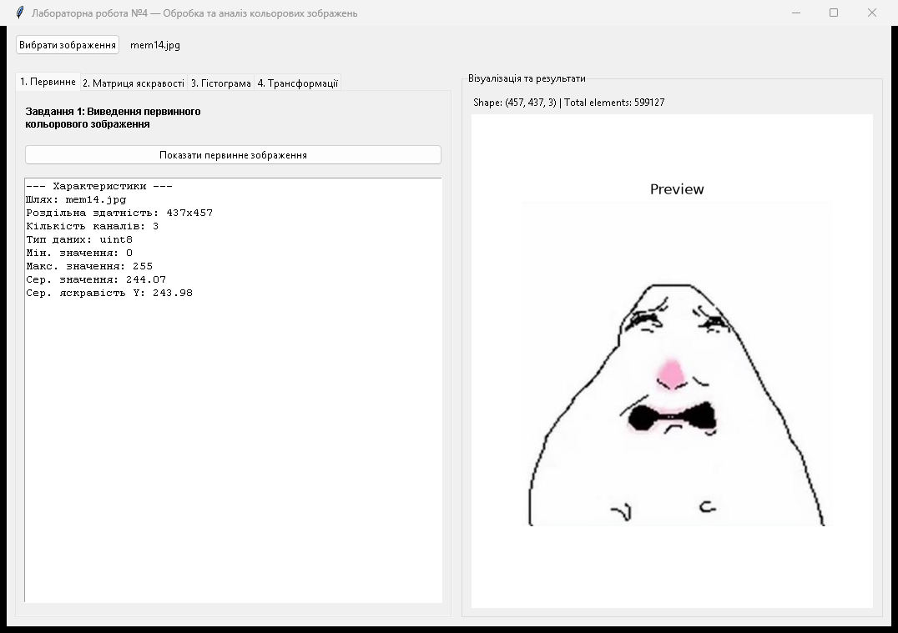
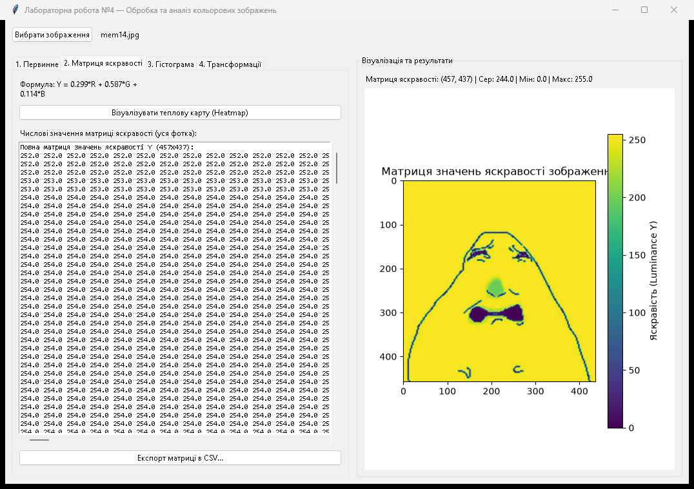
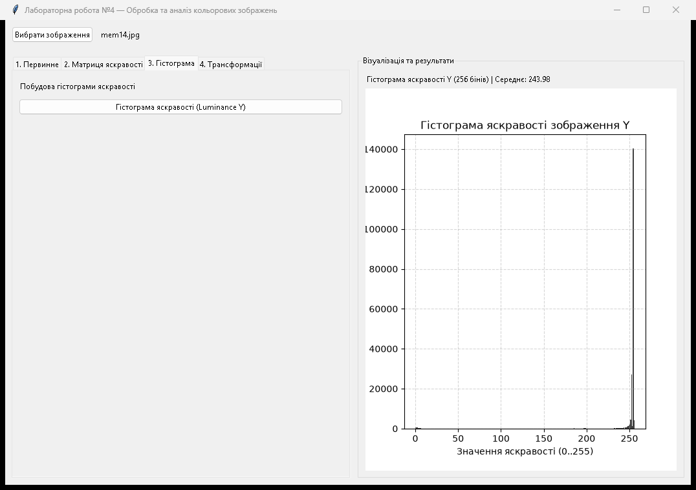
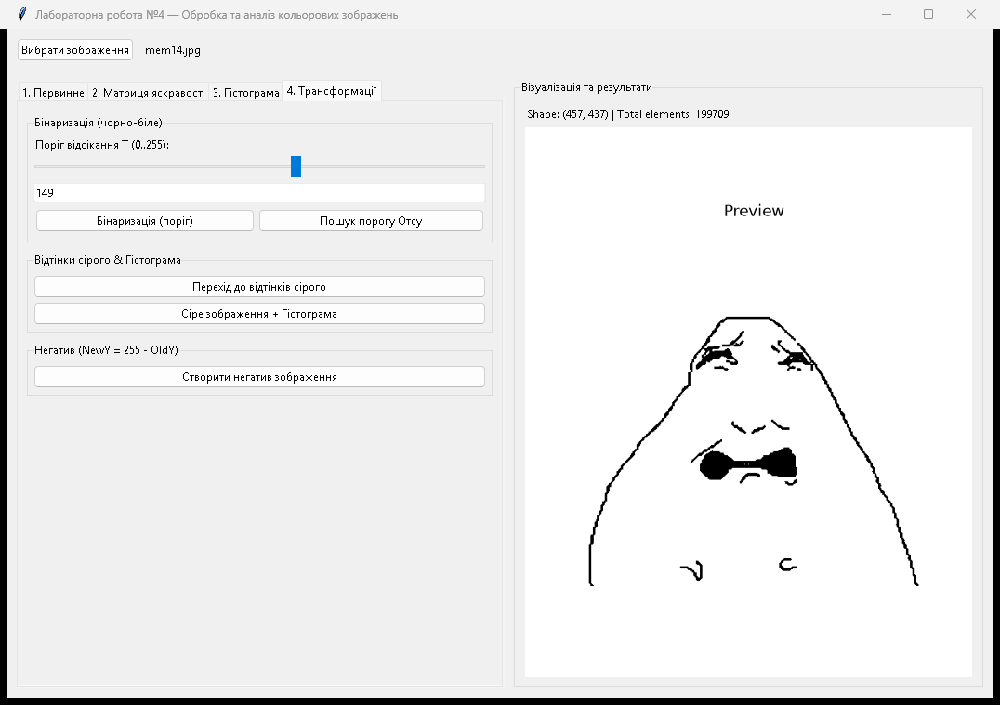
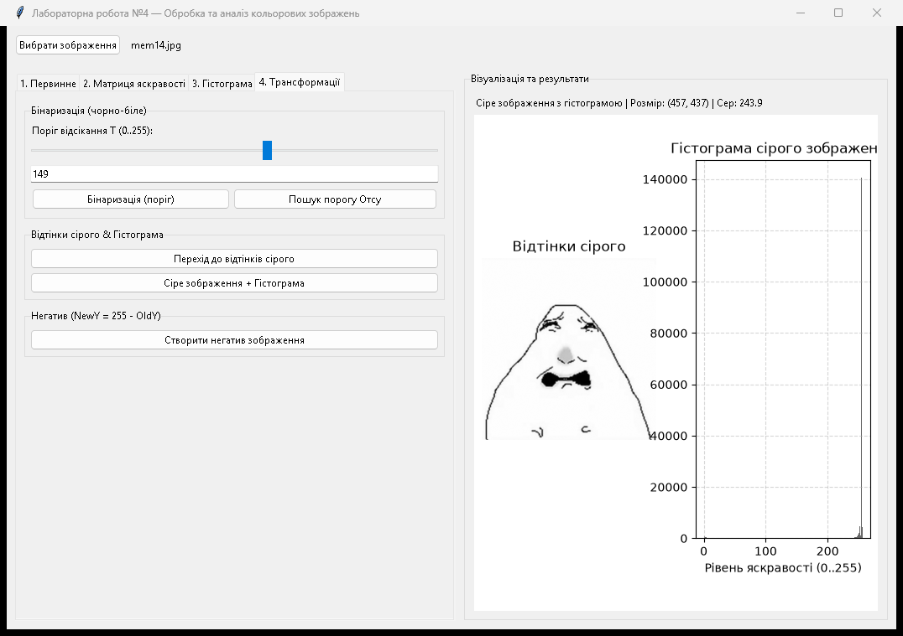
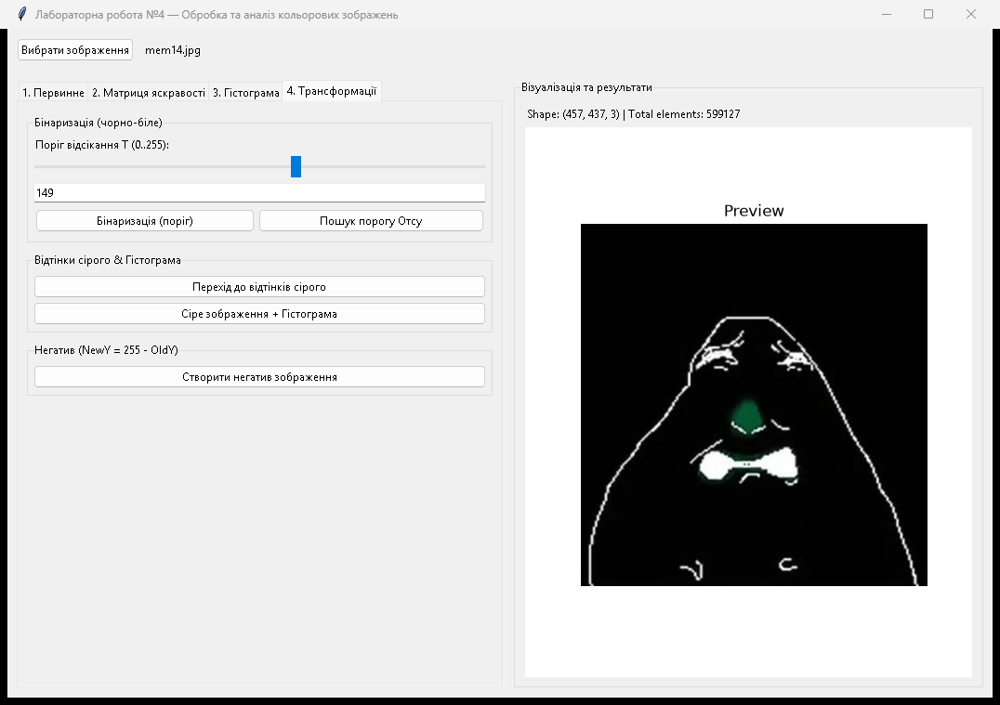

ЗВІТ
з лабораторної роботи з дисципліни
«Комп'ютерна графіка та візуалізація»
Тема: робота з растровими зображеннями, їхніми колірними характеристиками та гістограмами.
1. Лист завдання
Тема: робота з растровими зображеннями, їхніми колірними характеристиками та гістограмами.
Мета: ознайомитися з методами аналізу та обробки кольорових характеристик растрових зображень: отриманням і аналізом матриці яскравості (люмінансу), побудовою та дослідженням гістограми яскравості, реалізацією порогової бінаризації (ручний поріг та автоматичний поріг методом Отсу), знебарвленням та інверсією кольорів (негатив) за допомогою мови програмування Python.
Перелік завдань:
- Реалізувати завантаження кольорового растрового зображення та виведення його характеристик (роздільна здатність, діапазон і середнє значення інтенсивності).
- Обчислити повну числову матрицю значень яскравості за формулою Y = 0.299*R + 0.587*G + 0.114*B з виведенням всієї матриці у текстове поле зі скролінгом, побудовою кольорової теплової карти (Heatmap) та експортом у CSV.
- Побудувати гістограму розподілу яскравості Y (256 бінів) з налаштуванням осей координат.
- Реалізувати алгоритми бінаризації: за фіксованим ручним порогом та з автоматичним визначенням оптимального порогу методом Отсу.
- Реалізувати перетворення у напівтонове зображення (градації сірого) із супутньою гістограмою та створення негативу за формулою NewY = 255 - OldY.
2. Опис ходу виконання завдань
Хід розробки та функціональні блоки:
- compute_luminance_matrix — обчислення матриці яскравості Y на основі лінійної комбінації колірних каналів R, G, B з урахуванням чутливості людського зору.
- show_custom_fig — функція монтування графіків та діаграм бібліотеки Matplotlib у полотно графічного інтерфейсу Tkinter.
- show_and_save_gui — універсальна функція виведення графічного результату з інформаційним підписом та діалоговим вікном збереження у файл.
- _init_matrix_tab та _update_matrix_preview — блок роботи з матрицею яскравості: виведення повної числової матриці для всієї фотографії у текстове поле з вертикальною та горизонтальною смугами прокручування, побудова теплової карти (Heatmap) та експорт значень у CSV.
- _plot_luminance_hist — побудова 256-бінової гістограми розподілу значень яскравості зображення.
- _run_binarization та _run_otsu_binarization — бінаризація зображення за вказаним числовим порогом та автоматичний пошук порогу методом максимізації міжкласової дисперсії Отсу.
- _run_grayscale та _run_negative — формування монохромного зображення та обчислення негативу інверсією колірного діапазону.
Використані бібліотеки та модулі:
- tkinter / ttk — побудова графічного інтерфейсу (вкладки Notebook, текстові поля Text зі скролінгом, повзунки Scale, кнопки).
- filedialog / messagebox — інтерактивний вибір вхідного графічного файлу, експорт матриці в CSV та системні діалоги.
- numpy — векторні обчислення над пікселями, розрахунок формули люмінансу, порогова сегментація матриць та розрахунок статистичних параметрів.
- skimage (scikit-image) — зчитування та збереження графічних файлів різних форматів.
- matplotlib — побудова теплових карт розподілу яскравості та статистичних гістограм.
3. Лістинг програми
import os
import tkinter as tk
from tkinter import ttk, filedialog, messagebox
import numpy as np
from matplotlib import pyplot as plt
from matplotlib.backends.backend_tkagg import FigureCanvasTkAgg
from skimage.io import imread, imsave
def compute_luminance_matrix(img: np.ndarray) -> np.ndarray:
if img.ndim == 2:
return img.astype(np.float32)
rgb = img[:, :, :3].astype(np.float32)
y = 0.299 * rgb[:, :, 0] + 0.587 * rgb[:, :, 1] + 0.114 * rgb[:, :, 2]
return y
def show_custom_fig(fig, canvas_frame):
for widget in canvas_frame.winfo_children():
widget.destroy()
canvas = FigureCanvasTkAgg(fig, master=canvas_frame)
canvas.draw()
canvas.get_tk_widget().pack(fill=tk.BOTH, expand=True)
plt.close(fig)
def show_and_save_gui(image_array: np.ndarray, file_name: str, canvas_frame, info_label, save: bool = True):
for widget in canvas_frame.winfo_children():
widget.destroy()
fig, ax = plt.subplots(figsize=(5, 4))
if image_array.ndim == 2:
ax.imshow(image_array, cmap="gray", vmin=0, vmax=255)
else:
ax.imshow(image_array)
ax.axis("off")
ax.set_title("Preview")
canvas = FigureCanvasTkAgg(fig, master=canvas_frame)
canvas.draw()
canvas.get_tk_widget().pack(fill=tk.BOTH, expand=True)
plt.close(fig)
info_label.config(text=f"Shape: {image_array.shape} | Total elements: {image_array.size}")
if save and file_name:
if messagebox.askyesno("Save Image", f"Save image as:\n{file_name}?"):
try:
imsave(file_name, image_array)
messagebox.showinfo("Success", f"Saved as: {file_name}")
except Exception as e:
messagebox.showerror("Error", f"Failed to save image:\n{e}")
class AppLab4:
def __init__(self, root):
self.root = root
self.root.title("Лабораторна робота №4 — Обробка та аналіз кольорових зображень")
self.root.geometry("1060x720")
self.image_path = ""
self.img_array = None
self.y_matrix = None
file_frame = ttk.Frame(root, padding=10)
file_frame.pack(fill=tk.X)
ttk.Button(file_frame, text="Вибрати зображення", command=self.select_file).pack(side=tk.LEFT)
self.lbl_file = ttk.Label(file_frame, text="Файл не вибрано", padding=(10, 0))
self.lbl_file.pack(side=tk.LEFT, fill=tk.X, expand=True)
main_frame = ttk.Frame(root, padding=10)
main_frame.pack(fill=tk.BOTH, expand=True)
self.notebook = ttk.Notebook(main_frame)
self.notebook.pack(side=tk.LEFT, fill=tk.BOTH, padx=(0, 10), expand=False)
preview_frame = ttk.LabelFrame(main_frame, text="Візуалізація та результати", padding=10)
preview_frame.pack(side=tk.RIGHT, fill=tk.BOTH, expand=True)
self.lbl_info = ttk.Label(preview_frame, text="")
self.lbl_info.pack(anchor=tk.W, pady=(0, 5))
self.canvas_frame = ttk.Frame(preview_frame)
self.canvas_frame.pack(fill=tk.BOTH, expand=True)
self._init_orig_tab()
self._init_matrix_tab()
self._init_hist_tab()
self._init_transform_tab()
self.notebook.bind("<<NotebookTabChanged>>", self._on_tab_change)
def _on_tab_change(self, event):
if self.y_matrix is None: return
try:
tab_idx = self.notebook.index(self.notebook.select())
if tab_idx == 1:
self._show_matrix_heatmap()
except Exception:
pass
def select_file(self):
path = filedialog.askopenfilename(
filetypes=[("Image files", "*.jpg *.jpeg *.png *.bmp *.tiff *.gif"), ("All files", "*.*")]
)
if path:
try:
self.image_path = path
self.lbl_file.config(text=path)
self.img_array = imread(path)
self.y_matrix = compute_luminance_matrix(self.img_array)
show_and_save_gui(self.img_array, path, self.canvas_frame, self.lbl_info, save=False)
self._update_matrix_preview()
except Exception as e:
messagebox.showerror("Помилка", f"Не вдалося відкрити зображення:\n{e}")
def _check_file(self):
if self.img_array is None or self.y_matrix is None:
messagebox.showerror("Помилка", "Спочатку оберіть зображення!")
return False
return True
def _init_orig_tab(self):
tab = ttk.Frame(self.notebook, padding=10)
self.notebook.add(tab, text="1. Первинне")
ttk.Label(tab, text="Завдання 1: Виведення первинного кольорового зображення", wraplength=220, font=("Arial", 9, "bold")).pack(anchor=tk.W, pady=5)
ttk.Button(tab, text="Показати первинне зображення", command=self._show_original).pack(fill=tk.X, pady=10)
self.txt_stats = tk.Text(tab, height=12, width=32, wrap=tk.WORD)
self.txt_stats.pack(fill=tk.BOTH, expand=True, pady=5)
def _show_original(self):
if not self._check_file(): return
show_and_save_gui(self.img_array, self.image_path, self.canvas_frame, self.lbl_info, save=False)
h, w = self.img_array.shape[:2]
channels = self.img_array.shape[2] if self.img_array.ndim == 3 else 1
stats_text = (
f"--- Характеристики ---\n"
f"Шлях: {os.path.basename(self.image_path)}\n"
f"Роздільна здатність: {w}x{h}\n"
f"Кількість каналів: {channels}\n"
f"Тип даних: {self.img_array.dtype}\n"
f"Мін. значення: {np.min(self.img_array)}\n"
f"Макс. значення: {np.max(self.img_array)}\n"
f"Сер. значення: {np.mean(self.img_array):.2f}\n"
f"Сер. яскравість Y: {np.mean(self.y_matrix):.2f}\n"
)
self.txt_stats.delete("1.0", tk.END)
self.txt_stats.insert(tk.END, stats_text)
def _init_matrix_tab(self):
tab = ttk.Frame(self.notebook, padding=10)
self.notebook.add(tab, text="2. Матриця яскравості")
ttk.Label(tab, text="Формула: Y = 0.299*R + 0.587*G + 0.114*B", wraplength=220).pack(anchor=tk.W, pady=2)
ttk.Button(tab, text="Візуалізувати теплову карту (Heatmap)", command=self._show_matrix_heatmap).pack(fill=tk.X, pady=5)
ttk.Label(tab, text="Числові значення матриці яскравості (уся фотка):").pack(anchor=tk.W, pady=(5, 2))
txt_frame = ttk.Frame(tab)
txt_frame.pack(fill=tk.BOTH, expand=True, pady=2)
v_scroll = ttk.Scrollbar(txt_frame, orient=tk.VERTICAL)
v_scroll.pack(side=tk.RIGHT, fill=tk.Y)
h_scroll = ttk.Scrollbar(txt_frame, orient=tk.HORIZONTAL)
h_scroll.pack(side=tk.BOTTOM, fill=tk.X)
self.txt_matrix = tk.Text(
txt_frame,
wrap=tk.NONE,
xscrollcommand=h_scroll.set,
yscrollcommand=v_scroll.set,
font=("Consolas", 8)
)
self.txt_matrix.pack(side=tk.LEFT, fill=tk.BOTH, expand=True)
v_scroll.config(command=self.txt_matrix.yview)
h_scroll.config(command=self.txt_matrix.xview)
ttk.Button(tab, text="Експорт матриці в CSV...", command=self._export_matrix_csv).pack(fill=tk.X, pady=5)
def _update_matrix_preview(self):
if self.y_matrix is None: return
h, w = self.y_matrix.shape
text_rep = f"Повна матриця значень яскравості Y ({h}x{w}):\n"
lines = [" ".join(f"{self.y_matrix[r, c]:5.1f}" for c in range(w)) for r in range(h)]
text_rep += "\n".join(lines)
self.txt_matrix.delete("1.0", tk.END)
self.txt_matrix.insert(tk.END, text_rep)
def _show_matrix_heatmap(self):
if not self._check_file(): return
fig, ax = plt.subplots(figsize=(6, 4.5))
cax = ax.imshow(self.y_matrix, cmap="viridis")
fig.colorbar(cax, ax=ax, label="Яскравість (Luminance Y)")
ax.set_title("Матриця значень яскравості зображення")
self.lbl_info.config(text=f"Матриця яскравості: {self.y_matrix.shape} | Сер: {np.mean(self.y_matrix):.1f} | Мін: {np.min(self.y_matrix):.1f} | Макс: {np.max(self.y_matrix):.1f}")
show_custom_fig(fig, self.canvas_frame)
def _export_matrix_csv(self):
if not self._check_file(): return
out_path = filedialog.asksaveasfilename(
defaultextension=".csv",
filetypes=[("CSV files", "*.csv"), ("Text files", "*.txt")]
)
if out_path:
try:
np.savetxt(out_path, self.y_matrix, fmt="%.2f", delimiter=",")
messagebox.showinfo("Успіх", f"Матрицю яскравості експортовано в:\n{out_path}")
except Exception as e:
messagebox.showerror("Помилка", f"Не вдалося зберегти матрицю:\n{e}")
def _init_hist_tab(self):
tab = ttk.Frame(self.notebook, padding=10)
self.notebook.add(tab, text="3. Гістограма")
ttk.Label(tab, text="Побудова гістограми яскравості", wraplength=220).pack(anchor=tk.W, pady=5)
ttk.Button(tab, text="Гістограма яскравості (Luminance Y)", command=self._plot_luminance_hist).pack(fill=tk.X, pady=5)
def _plot_luminance_hist(self):
if not self._check_file(): return
fig, ax = plt.subplots(figsize=(6, 4))
y_vals = self.y_matrix.ravel()
ax.hist(y_vals, bins=256, range=(0, 256), color="black", alpha=0.75, edgecolor="none")
ax.set_title("Гістограма яскравості зображення Y")
ax.set_xlabel("Значення яскравості (0..255)")
ax.set_ylabel("Кількість пікселів")
ax.grid(True, linestyle="--", alpha=0.5)
self.lbl_info.config(text=f"Гістограма яскравості Y (256 бінів) | Середнє: {np.mean(y_vals):.2f}")
show_custom_fig(fig, self.canvas_frame)
def _init_transform_tab(self):
tab = ttk.Frame(self.notebook, padding=10)
self.notebook.add(tab, text="4. Трансформації")
bin_frame = ttk.LabelFrame(tab, text="Бінаризація (чорно-біле)", padding=5)
bin_frame.pack(fill=tk.X, pady=5)
ttk.Label(bin_frame, text="Поріг відсікання T (0..255):").pack(anchor=tk.W)
self.scale_thresh = ttk.Scale(bin_frame, from_=0, to=255, value=128)
self.scale_thresh.pack(fill=tk.X, pady=2)
self.ent_thresh = ttk.Entry(bin_frame)
self.ent_thresh.insert(0, "128")
self.ent_thresh.pack(fill=tk.X, pady=2)
def sync_th(val):
self.ent_thresh.delete(0, tk.END)
self.ent_thresh.insert(0, str(int(float(val))))
self.scale_thresh.config(command=sync_th)
btn_box = ttk.Frame(bin_frame)
btn_box.pack(fill=tk.X, pady=5)
ttk.Button(btn_box, text="Бінаризація (поріг)", command=self._run_binarization).pack(side=tk.LEFT, fill=tk.X, expand=True, padx=2)
ttk.Button(btn_box, text="Пошук порогу Отсу", command=self._run_otsu_binarization).pack(side=tk.LEFT, fill=tk.X, expand=True, padx=2)
gray_frame = ttk.LabelFrame(tab, text="Відтінки сірого & Гістограма", padding=5)
gray_frame.pack(fill=tk.X, pady=5)
ttk.Button(gray_frame, text="Перехід до відтінків сірого", command=self._run_grayscale).pack(fill=tk.X, pady=2)
ttk.Button(gray_frame, text="Сіре зображення + Гістограма", command=self._run_gray_with_hist).pack(fill=tk.X, pady=2)
neg_frame = ttk.LabelFrame(tab, text="Негатив (NewY = 255 - OldY)", padding=5)
neg_frame.pack(fill=tk.X, pady=5)
ttk.Button(neg_frame, text="Створити негатив зображення", command=self._run_negative).pack(fill=tk.X, pady=2)
def _run_binarization(self):
if not self._check_file(): return
try:
thresh = int(float(self.ent_thresh.get()))
except ValueError:
messagebox.showerror("Помилка", "Введіть ціле число від 0 до 255 для порогу!")
return
binary = np.where(self.y_matrix >= thresh, 255, 0).astype(np.uint8)
base_name = self.image_path.rsplit(".", 1)[0]
ext = self.image_path.rsplit(".", 1)[1]
new_name = f"{base_name}_binary_T{thresh}.{ext}"
show_and_save_gui(binary, new_name, self.canvas_frame, self.lbl_info)
def _run_otsu_binarization(self):
if not self._check_file(): return
pixel_counts, _ = np.histogram(self.y_matrix.ravel(), bins=256, range=(0, 256))
total_pixels = self.y_matrix.size
current_max, best_threshold = 0.0, 0
sum_total = np.dot(np.arange(256), pixel_counts)
weight_b, sum_b = 0, 0
for t in range(256):
weight_b += pixel_counts[t]
if weight_b == 0: continue
weight_f = total_pixels - weight_b
if weight_f == 0: break
sum_b += t * pixel_counts[t]
mean_b = sum_b / weight_b
mean_f = (sum_total - sum_b) / weight_f
between_variance = weight_b * weight_f * ((mean_b - mean_f) ** 2)
if between_variance > current_max:
current_max = between_variance
best_threshold = t
self.scale_thresh.set(best_threshold)
self.ent_thresh.delete(0, tk.END)
self.ent_thresh.insert(0, str(best_threshold))
messagebox.showinfo("Оптимальний поріг Отсу", f"Обчислений автоматичний поріг Отсу: T = {best_threshold}")
self._run_binarization()
def _run_grayscale(self):
if not self._check_file(): return
gray = np.clip(self.y_matrix, 0, 255).astype(np.uint8)
base_name = self.image_path.rsplit(".", 1)[0]
ext = self.image_path.rsplit(".", 1)[1]
new_name = f"{base_name}_grayscale.{ext}"
show_and_save_gui(gray, new_name, self.canvas_frame, self.lbl_info)
def _run_gray_with_hist(self):
if not self._check_file(): return
gray = np.clip(self.y_matrix, 0, 255).astype(np.uint8)
fig, (ax1, ax2) = plt.subplots(1, 2, figsize=(8, 4))
ax1.imshow(gray, cmap="gray", vmin=0, vmax=255)
ax1.set_title("Відтінки сірого")
ax1.axis("off")
ax2.hist(gray.ravel(), bins=256, range=(0, 256), color="dimgray", edgecolor="none")
ax2.set_title("Гістограма сірого зображення")
ax2.set_xlabel("Рівень яскравості (0..255)")
ax2.grid(True, linestyle="--", alpha=0.5)
fig.tight_layout()
show_custom_fig(fig, self.canvas_frame)
self.lbl_info.config(text=f"Сіре зображення з гістограмою | Розмір: {gray.shape} | Сер: {np.mean(gray):.1f}")
def _run_negative(self):
if not self._check_file(): return
neg = (255 - self.img_array[:, :, :3]).astype(np.uint8)
base_name = self.image_path.rsplit(".", 1)[0]
ext = self.image_path.rsplit(".", 1)[1]
new_name = f"{base_name}_negative.{ext}"
show_and_save_gui(neg, new_name, self.canvas_frame, self.lbl_info)
if __name__ == "__main__":
root = tk.Tk()
app = AppLab4(root)
root.mainloop()4. Результати виконання роботи
Рис. 1. Головне вікно програми після вибору вихідного зображення (вкладка «1. Первинне»)

Рис. 2. Повна числова матриця значень яскравості для всієї фотографії зі скролінгом (вкладка «2. Матриця яскравості»)

Рис. 3. Теплова карта (Heatmap) значень яскравості зображення на полотні (вкладка «2. Матриця яскравості»)

Рис. 4. Гістограма яскравості зображення (вкладка «3. Гістограма»)

Рис. 5. Бінаризація зображення методом Отсу (вкладка «4. Трансформації»)

Рис. 6. Напівтонове сіре зображення з супутньою гістограмою (вкладка «4. Трансформації»)

Рис. 7. Результат створення негативу зображення (вкладка «4. Трансформації»)

5. Висновки
Під час виконання лабораторної роботи було створено програму на мові Python для аналізу та зміни кольорових характеристик зображень.
У ході роботи реалізовано графічний інтерфейс із використанням бібліотеки tkinter, побудовано повну числову матрицю люмінансу за формулою Y = 0.299R + 0.587G + 0.114B для всієї фотографії з можливістю двовимірного скролінгу та візуалізацією у вигляді теплової карти, розроблено модуль побудови гістограми яскравості, а також виконано операції бінаризації (зокрема автоматичним методом Отсу), знебарвлення та створення негативу засобами NumPy, Matplotlib та scikit-image.